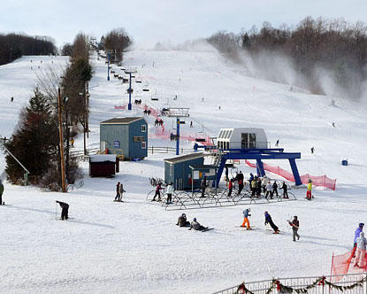

Walter Schoenknecht, the visionary behind Mount Snow in Vermont, created Mohawk Mountain in the Southern Berkshires, in Cornwall, CT in 1947. This is the oldest and largest ski area in Connecticut, and dubbed "the home of snowmaking. " Mohawk has a summit elevation of 1600 feet, 25 trails spread out over 107 acres of skiable terrain and a 650 foot vertical drop. Mohawk provides night skiing on 12 trails and has snowmaking on 95% of all of their terrain. There is dining at the mountain in the base lodge as well as lodging and dining in the town of Cornwall.
Go north on the NYS Thruway (I-87 north) to Exit 18, New Paltz. After leaving the NYS Thruway at Exit 18, turn left at the traffic light onto Route 299/Main Street. Follow Main Street through New Paltz. Immediately after crossing the bridge over the Wallkill River, turn right (follow “MOHONK” sign). After 1/4 mile bear left at the fork and follow Mountain Rest Road and Mohonk signs to the Gatehouse.
Train Service is available via Metro North and Amtrak trains to the Poughkeepsie Train Station. We recommend that you take a taxi from Poughkeepsie train station to our resort. Taxi fares may vary.
Bus service available on Adirondack Trailways to the New Paltz Bus Station. Service to our New York resort departs from: Port Authority in New York City Albany Trailways Terminal Route 17 in Ridgewood, New Jersey Locations in Southern New York and Long Island Our Guest Services staff can provide transportation from the bus station in New Paltz to our resort. For pickup at the bus station, please call our Guest Services department at (845) 256-2016 at least 24 hours in advance.

In the 1960s, when boots were leather and laced and skis were long, Dr. Harold Richman returned from a ski trip in Vermont with his wife Barbara, inspired to build a family-oriented ski area in central Connecticut. After looking around for just the right spot – aesthetic and convenient, with land and water resources – he discovered a dairy farm in Southington that was for sale. The site was perfect. Dr. Richman partnered with other members of his family along with the Palmisano family, of Bristol, CT, and other local investors. Together they purchased the dairy farm, carved out trails, installed lifts and snowmaking equipment and began to create the Mount Southington Ski Area of today.
Mount Southington Ski Area has always enjoyed hosting and supporting our community by offering our services to wonderful organizations such as - CT Children’s Medical Center, Nutmeg Big Brothers Big Sisters, CT Special Olympics, and Leaps of Faith, along with many others. Our staff – many of whom have been with us for years – are passionate about making every day a great day for the skiers and snowboarders on our slopes. 1964 to today … over 50 years of growth and change! If you’ve shared our journey, thank you for being a part of it. If now is the time to begin, we invite you and your family to visit our slopes, take a lesson or two, and make memories of your own with us!
Take the Hutchinson River Parkway East onto Rt. I-684 North. Follow I-684 North onto I-84 East to Exit 30. Left off Exit – follow signs to ski area. Bridgeport (1–1/4 hours)
Ski Sundown, located in the small town of New Hartford, CT, is one of the premier ski areas in Connecticut. Sundown has 15 trails, 14 lit up for night skiing, spread out over 65 acres of skiable terrain for skiers and snowboarders to enjoy. Skiers can access trails via 3 triple chairlifts, 1 double and a conveyor. The mountain has 100% snowmaking capacity and an impressive, for Connecticut, 1075 foot summit elevation. Sundown prides itself on their top-notch terrain parks, located on Stinger and Tom's Treat. Sundown's lodge is spacious and provides tons of seating and dining options, as well as coin operated lockers and Free Wi-Fi internet access.
Getting to Ski Sundown is easy! We are located off of Routes 44 and 219 in New Hartford, Connecticut. We are 40 minutes from Hartford, CT; 1 hour from Danbury, CT; 1 hour 20 minutes from Stamford, CT; 1.5 hours from Westchester County, NY; and about 2 hours from New York City.
Woodbury Ski Area is located in Woodbury, Connecticut. This small ski area is in New England. The skiing and snow tubing operations are serviced by a chairlift and multiple surface lifts. Local residents refer to it as "Rod's" after its owner, Olympic skier Rod Taylor. True locals refer to it as "Woodbury Rock & Gravel" after its previous name "Woodbury Ski and Racket" because snow coverage is often inadequate and the terrain can be damaging to skis and boards; recommended: use beaters or rentals. Taylor opened the resort in 1972. Taylor took pride in Woodbury being the first ski area in Connecticut to open each season.
Mount Southington Ski Area has always enjoyed hosting and supporting our community by offering our services to wonderful organizations such as - CT Children’s Medical Center, Nutmeg Big Brothers Big Sisters, CT Special Olympics, and Leaps of Faith, along with many others. Our staff – many of whom have been with us for years – are passionate about making every day a great day for the skiers and snowboarders on our slopes. 1964 to today … over 50 years of growth and change! If you’ve shared our journey, thank you for being a part of it. If now is the time to begin, we invite you and your family to visit our slopes, take a lesson or two, and make memories of your own with us!
From Metro New York: RT-9A NORTH ( West Side Highway), CROSS COUNTY PKWY/HUTCHINSON PKWY/MERRITT PKWY exit, exit #4,HUTCHINSON RIVER PKY N, I-684 NORTH towards BREWSTER, Take the I-84 EAST exit towards DANBURY, exit #9E, Take the CT-67/US-6 exit towards SEYMOUR/SOUTHBURY, exit #15, Turn Left on MAIN ST N, Turn LEFT onto WASHINGTON RD/CT-47. Woodbury Ski Area is 4 miles on the left.